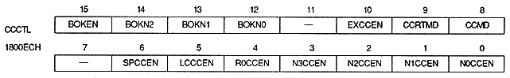

N0SPRM1,N0SPRM0 | 1800EAH | bit 1,0 | NBG0 (or RBG1) |
N1SPRM1, N1SPRM0 | 1800EAH | bits 3,2 | NBG1 (or EXBG) |
N2SPRM1, N2SPRM0 | 1800EAH | bits 5,4 | For NBG2 |
N3SPRM1, N3SPRM0 | 1800EAH | bits 7,6 | NBG3 |
R0SPRM1, R0SPRM0 | 1800EAH | bits 9,8 | for RBG0 |
xxSPRM1 | xxSPRM0 | Mode | Process |
0 | 0 | Mode 0 | The least significant bit of the priority number is specified for each screen |
0 | 1 | Mode 1 | The least significant bit of the priority number is specified for each character |
1 | 0 | Mode 2 | The least significant bit of the priority number is specified for each dot |
1 | 1 | − |

Bokeh operation enable bit : Gradation enable bit (BOKEN), bit 15
BOKEN | Processing |
0 | Do not use the blur calculation function |
1 | Use the blur calculation function |
BOKN2 | BOKN1 | BOKN0 | Bokeh calculation function use screen | ||||||||||||||||||||
0 | 0 | 0 | |||||||||||||||||||||
0 | 0 | 1 | |||||||||||||||||||||
0 | 1 | 0 | |||||||||||||||||||||
0 | 1 | 1 | |||||||||||||||||||||
1 | 0 | 0 | |||||||||||||||||||||
1 | 0 | 1 | |||||||||||||||||||||
1 | 1 | 0 | |||||||||||||||||||||
1 | 1 | 1 |